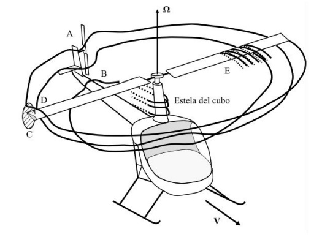
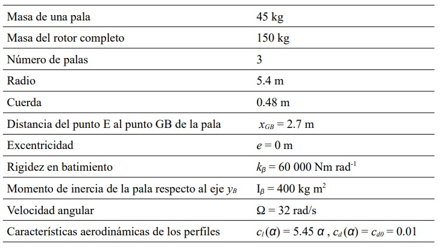

Escriba en el recuadro el número de la única opción verdadera (opción correcta: 1.5 puntos; en blanco: 0 puntos; errónea: -0.75 puntos).
Según el modelo de velocidad inducida de Glauert (Teoría de Cantidad de Movimiento en vuelo de avance), en una situación de vuelo en plano de disco (Vz/Vio=0), la potencia inducida adimensional Pi/Pio:
1. Aumenta indefinidamente con Vx/Vio.
2. Disminuye indefinidamente con Vx/Vio.
3. Inicialmente disminuye con Vx/Vio y luego aumenta.
2
Examen Ordinario 2021
Escriba en el recuadro el número de la única opción verdadera (opción correcta: 1.5 puntos; en blanco: 0 puntos; errónea: -0.75 puntos).
En la figura se muestra un helicóptero convencional en vuelo de avance horizontal. En el esquema se destacan 5 fenómenos representativos de la complejidad del vuelo del helicóptero (A, B, C, D y E) en las
zonas de la aeronave donde suelen tener lugar. El fenómeno indicado por E representa:
1. efectos transónicos.
2. entrada en pérdida dinámica de los perfiles.
3. la interacción de estela con el fuselaje.

2
Examen Ordinario 2021
Escriba en el recuadro el número de la única opción verdadera (opción correcta: 1.5 puntos; en blanco: 0 puntos; errónea: -0.75 puntos).
Considere un rotor con un sentido de rotación antihorario (visto desde arriba), en una situación de vuelo a punto fijo, y con número de rigidez Sβ=0.1. Se introduce una ley de paso cíclico caracterizada por θ1C=−1 y θ1S =0. El rotor comienza un desplazamiento:
1. hacia adelante y hacia la izquierda.
2. hacia adelante y hacia la derecha.
3. hacia atrás y hacia la derecha.
3
Examen Ordinario 2021
Considere un rotor aislado con palas rectas y sin torsión geométrica, con las características indicadas en la tabla, y en situación equilibrada de vuelo a punto fijo a nivel del mar (ρ = 1,225 kg/m3). Haciendo uso de la Teoría de Cantidad de Movimiento y
Teoría del Elemento de Pala, y suponiendo las hipótesis habituales, se pide:

La solidez del rotor, σ (0.5 puntos)
La frecuencia natural adimensional no amortiguada en batimiento, λβ (1 punto)
El coeficiente de tracción, CT (0.5 puntos)
La velocidad inducida, vi0 (1 punto)
El parámetro de velocidad inducida, λi0 (0.5 puntos)
El ángulo de paso colectivo, θ0 (1 punto)
El coeficiente de potencia inducida, CQi (0.5 puntos)
El coeficiente de potencia parásita, CQ0 (0.5 puntos)